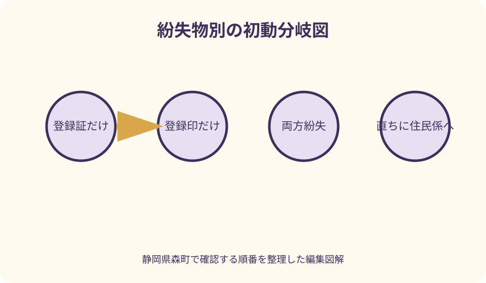
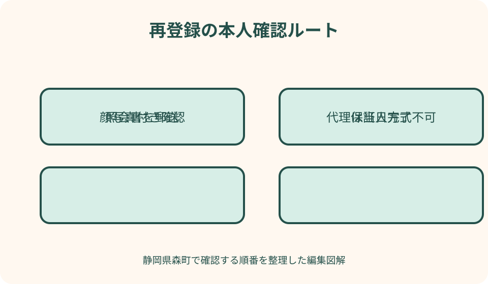

行政手続・証明書｜最終確認 2026-08-10
静岡県森町で印鑑登録証を紛失｜亡失届・廃止・再登録の順序
印鑑登録証をなくしたときは、証明書が必要になる日まで待たず、森町住民生活課住民係へ直ちに連絡することが最優先です。森町公式は、緊急時には電話で亡失届の仮受付ができると案内しています。ただし、登録証だけをなくした場合と、登録した実印そのものをなくした場合では届出が違います。仮受付、正式届、廃止、再登録、証明書取得を一つずつ分けて進めます。
最初に登録証・登録印・本人確認書類のどれを失ったか分ける
紛失に気付いたら、最初に三つを分けます。印鑑登録証だけがないのか、登録した実印だけがないのか、財布やかばんごと失って両方と本人確認書類がないのかです。この分類で森町へ伝える届出と安全対応が変わります。
印鑑登録証は、印鑑登録証明書を窓口で請求する際に持参するカードです。森町公式は、すでに登録がある人が証明書を求めるときは登録証を持参すると案内しています。登録した印鑑そのものを持って行けば代用できるとは示していません。
登録印をなくした場合は、カードが手元にあっても安心とは限りません。森町公式は盗難などで印鑑をなくしたとき、登録証を添えて本人が廃止届を出すよう案内しています。使い続ける前提で新しい印鑑だけを購入しないでください。
両方をなくした場合は、登録証亡失と登録印亡失の両方を最初に伝えます。公式ページの個別説明を自分で組み合わせて書類を決めず、現在の登録を止める手続と新規登録の順序を住民係へ確認します。
印鑑登録証をなくしたら直ちに森町へ連絡する
森町公式は、印鑑登録証をなくしたとき、直ちに亡失届書で本人が届け出るよう案内しています。いつか不動産契約で必要になった時に再発行すればよい、と先送りせず、紛失に気付いた日を基準に連絡します。
緊急な場合は電話でも仮受付ができることが森町ページに明記されています。住民生活課住民係へ、本人氏名、住所、生年月日、紛失した物、盗難の可能性、登録印が手元にあるかを伝え、仮受付後に必要な正式手続を確認します。
電話の仮受付は、正式な亡失届や廃止・再登録が完了したことと同じだと考えないでください。受付日時、対応した窓口、次に必要な申請、期限、持参物をメモし、本人または代理人がいつ来庁するかを決めます。
夜間や閉庁日に気付いた場合は、町公式の連絡方法を確認します。緊急電話が常時つながると決めつけず、盗難や悪用の具体的な心配がある場合は警察への届出・相談も検討し、役場の開庁後すぐ住民係へ連絡します。
盗難の可能性があるときは町への届出だけで終えない
財布やかばんごと盗まれ、印鑑登録証、実印、運転免許証、マイナンバーカードなどが一緒に失われた場合は、本人情報と証明手段が組み合わさる危険があります。印鑑登録の亡失だけを処理し、他のカードを放置しないでください。
警察へ遺失・盗難を届けるときは、なくした物を一覧にします。印鑑登録証の材質や色、登録印の特徴、財布を最後に確認した場所と時刻を整理します。届出番号などを受け取ったら、必要に応じて役場や金融機関へ伝えられるよう記録します。
金融機関の届出印と森町へ登録した実印が同じ場合は、金融機関にも連絡が必要です。自治体の印鑑登録廃止だけで、預金口座の届出印が自動的に変わるわけではありません。通帳やキャッシュカードもなくしたなら各機関の停止手続を優先します。
不動産会社、金融機関、家族を名乗る人から、紛失確認のため暗証番号や個人番号を聞かれても即答しません。連絡先を公式ページやカード裏面以外の信頼できる資料で確認し、自分から正規窓口へかけ直します。

登録証亡失と登録印亡失では届出名が違う
登録証だけをなくした場合、森町公式は「亡失届書」により本人が届け出るとしています。一方、登録した印鑑を盗難などでなくした場合は「廃止届出書」に印鑑登録証を添え、本人が届け出る案内です。まずどちらに当たるかを正確に伝えます。
登録印が欠けた、摩耗した、別の印鑑へ替えたい場合は「改印」の場面です。森町公式は、登録証を添えて廃止届を出した上で、新規登録手続を行う流れを示しています。古い登録を残したまま二本目を追加する仕組みではありません。
登録証が汚損・破損した場合と、所在が分からない紛失は安全性が異なります。破損カードが手元にあるなら持参できますが、紛失カードは添付できません。公式ページの再交付説明には登録証添付の記載もあるため、紛失時の扱いは電話で確認してください。
届け出る用語が分からなくても問題ありません。「カードなし・印鑑あり」「カードあり・印鑑なし」「両方なし」のように現物の有無を伝えます。再交付、廃止、再登録の名称を自分で選ぶより、窓口が現在登録に必要な処理を判断できる説明が有効です。
再交付と再登録を同じ手続と思わない
森町公式ページには印鑑登録証の再交付案内があり、著しく汚れたとき、破損、紛失したときを挙げています。ただし同じ説明で登録証を添えるよう求めているため、完全紛失時に再交付だけで済むかはページだけで判断できません。
再交付は現在の登録を前提にカードを扱う手続、再登録は従来登録を廃止して新しく登録し直す手続として分けて考えます。どちらになるかで、登録印、本人確認、保証人、照会書、委任状、交付までの日数が変わります。
紛失カードの番号が分かる、写真がある、過去の証明書があるとしても、それだけで再交付条件を満たすとは限りません。カード番号を公開チャットへ送らず、本人確認を受けて住民係の案内に従います。
不動産決済や自動車手続の期限が迫っている場合は、再交付か再登録かの確認と同時に、印鑑登録証明書をいつ取得できる見込みかを尋ねます。当日発行を約束してもらうのではなく、照会書郵送が必要なケースを予定へ入れます。
本人が再登録する方法は顔写真付き身分証の有無で分かれる
森町で新しく印鑑登録する際、本人が顔写真付き身分証明書を持っている場合、登録する印鑑とマイナンバーカードや運転免許証等を用意する案内があります。紛失時にはその本人確認書類も失っていないかを先に確認します。
顔写真付き身分証明書がなくても、森町で印鑑登録している保証人を使う方法が公式に示されています。保証人は申請書の保証欄へあらかじめ自署し登録印を押し、保証人の印鑑登録証も必要です。単なる同伴だけでは足りません。
保証人がおらず顔写真付き身分証明書もない場合、窓口で仮登録をした後、照会書が住民登録地へ郵送されます。森町公式はその場ですぐ登録できないと明記しています。証明書が即日必要な予定には間に合わない可能性があります。
登録できる印鑑には材質・形状等の条件があります。森町公式はゴム印、既製認印、三文判、大量生産され市販されているもの、形が変わりやすいものなどを登録できない例として示しています。購入前に印影サイズ等を最新申請書で確認します。
代理人手続は委任事項を一つずつ指定する
本人が来庁できず代理人へ頼む場合、森町公式は登録する印鑑、委任状、代理人の印鑑を必要物として案内しています。代理申請では仮登録後に照会書を住民登録地へ郵送し、その場ですぐ登録できません。
森町の印鑑登録用委任状には、印鑑登録申請、登録証再交付申請、登録証亡失届、登録廃止申請という別々の委任項目があります。必要な項目へ印を付け、紛失対応全体を曖昧な「印鑑の手続一式」と書かないようにします。
委任状は原則として委任者本人が記入し、登録印を紛失した場合は認印を使う旨が町様式に記載されています。本人が自筆できない事情がある場合は、代筆用委任状の条件を住民係へ確認します。代理人が勝手に本人欄を埋めません。
代理人は、仮受付、照会書の受領、回答書を持参する段階など、何度の手続が必要かを確認します。本人の住民登録地で郵便を受け取れない事情があると完了方法が変わり得るため、施設入所や入院中であることを事前に伝えます。
印鑑登録証明書が急ぎでも亡失連絡を遅らせない
売買契約、相続登記、車両手続などで印鑑登録証明書が必要な日が近くても、カード紛失の連絡を証明取得後まで待つのは避けます。悪用防止のための連絡と、証明書を用意する期限を別々に調整します。
森町窓口での印鑑登録証明書交付は、登録証の持参が案内されています。登録した実印、免許証、過去の証明書だけを持参してカードなしで交付されると考えず、亡失後にどの手続を終えれば請求できるかを確認します。
マイナンバーカードを持つ本人は、森町のコンビニ交付で本人の印鑑登録証明書を取得できる案内があります。しかし亡失の仮受付や廃止後も使えるとは限りません。安全のための停止を遅らせず、現在の登録状態で利用可能かを住民係へ確認します。
提出先へは、登録証紛失により再登録等の確認中であることを早めに伝えます。証明書の発行日条件、提出期限の延長、契約日の変更、別の本人確認方法があるかを尋ね、無理な即日取得を前提にしません。
コンビニ交付と登録証を使う窓口交付を分ける
森町のコンビニ交付は、森町で印鑑登録している本人が、利用者証明用電子証明書を搭載したマイナンバーカード等と暗証番号を使う仕組みです。窓口で印鑑登録証を提示する交付とは本人確認の経路が違います。
コンビニで代理人や家族の印鑑登録証明書を取ることはできません。森町公式は本人のものに限ると明記しています。本人のマイナンバーカードと暗証番号を家族へ渡して操作させることは避けます。
暗証番号を連続して間違えた場合や電子証明書が期限切れの場合、コンビニ交付を利用できません。カード紛失対応に加えて暗証番号再設定まで必要になると時間がかかるため、直前に初めて試す予定を立てないでください。
コンビニ端末で証明書の種類や部数を誤っても、森町公式は返金・差替えをしない旨を案内しています。登録状態が有効か、提出先が求める発行日か、必要枚数はいくつかを確かめてから操作します。

水曜日時間外窓口を使う前に完了範囲を確認する
森町は水曜日の時間外窓口で、印鑑登録証明書の交付と印鑑登録申請の受付を扱うと案内しています。ただし、登録申請を受付できることと、その場で登録証・証明書まで受け取れることは同じではありません。
顔写真付き本人確認書類がない人、保証人がいない人、代理人申請では照会書の郵送が関係します。夜間窓口へ行けば即日完了すると期待せず、自分の本人確認方法と亡失状況を日中に住民係へ伝えて確認します。
登録証亡失の電話仮受付、正式亡失届、廃止、再登録の全てを時間外に処理できるかも別確認です。時間外窓口の一覧に「亡失届」まで個別記載されているわけではないため、持参物と取扱範囲を問い合わせます。
森町北部や山間部から移動する場合は、往復時間と帰路も含めて予定を立てます。閉庁間際に不足が判明しないよう、登録印、本人確認、委任状、旧登録証の有無を電話で読み上げてから向かいます。
良い点
森町の案内で良い点は、登録証をなくしたときは直ちに本人が亡失届を出すこと、緊急時は電話で仮受付できることが明記されている点です。開庁日まで何もできないと思い込まず、最初の安全行動を取れます。
登録証亡失、登録印亡失、改印、再交付が別見出しになっているため、何をなくしたかで手続を分けられます。カードと印鑑を一括して「実印紛失」と呼ぶのではなく、窓口へ正しい現状を伝えやすくなります。
顔写真付き本人確認、保証人、照会書、代理人という登録方法が示されていることも実用的です。本人確認書類を失った人でも、別の確認経路があることを知り、証明書の必要日から逆算できます。
コンビニ交付と水曜日時間外窓口があるため、現在の登録が有効で条件を満たす人には取得時間の選択肢があります。ただし亡失後の利用可否は別確認とすることで、安全と利便性を混同せずに済みます。
注文したい点
森町公式の再交付説明は、紛失も対象に挙げる一方で印鑑登録証を添えて申請するよう記載しており、完全に紛失した人には手順が読み取りにくい部分があります。亡失届後に再交付か再登録かを電話で確認する必要があります。
亡失届書や廃止届書そのものは、申請書一覧で見つけにくい場合があります。委任状には亡失・廃止の選択欄がありますが、本人が使う正式様式と持参物を一つの表で確認できると、より迷いが減ります。
電話の仮受付がどこまで効力を持ち、いつまでに正式届が必要かも、町ページ本文だけでは詳しく分かりません。利用者は「電話したから完了」と誤解せず、次の手続をその場で聞き取る必要があります。
コンビニ交付が使えることは便利ですが、登録証亡失の仮受付・廃止との関係がページ間で示されていません。急いで証明書を取りたい人ほど、停止連絡を遅らせる誘惑があるため、安全を優先した確認順が必要です。
家族で管理を引き継ぐときの注意
高齢の家族の印鑑登録証を預かっていた人が紛失した場合、預かり手が本人に代わって自由に亡失・再登録できるとは限りません。まず本人へ事実を伝え、本人の意思で森町へ連絡する方法を考えます。
本人が入院中、施設入所中、意思を伝えにくい場合は、通常の委任状で足りるか、代筆用委任状や別の代理権限が必要かを住民係へ相談します。家族関係だけで登録印を選び直しません。
新しい印鑑登録証を受け取った後は、カードと実印を同じ袋・同じ金庫に入れない管理方法を考えます。登録番号の写真を家族全員へ共有するのではなく、管理担当者と保管場所を限定します。
本人死亡後に実印や登録証が見つかった場合、それを相続人の印鑑証明へ使うことはできません。相続手続では各相続人が自分の印鑑登録証明書を求められる場合があります。亡くなった人の印鑑を誰が保管・処分するかは、遺品管理として別に決めます。
代案・結論
登録証だけをなくした場合の第一行動は、森町住民生活課住民係への亡失連絡です。緊急なら電話仮受付を確認し、正式な亡失届、再交付または再登録、本人確認、証明書取得可能日を一続きで聞きます。
登録印だけをなくした場合は、手元の登録証を安全に確保し、廃止届と新規登録の流れを確認します。新しい印鑑を先に注文するなら、森町で登録可能な大きさ・材質・印影かを確認し、機械的に同じ印影を作ればよいと考えません。
本人が動けない場合は、町指定の委任状で亡失、廃止、再交付、登録のどれを委任するかを選びます。代理人申請は照会書郵送により当日完了しないため、提出先へ証明書期限の調整を依頼します。
結論として、紛失物を分ける、直ちに連絡する、現在の登録を止める手続を確認する、再交付か再登録かを決める、証明書取得日を提出先と調整する、という順が安全です。急ぎの証明より登録悪用の予防を先に置きます。
大石の視点
大石の視点では、印鑑登録証の紛失を不動産売買の直前だけの問題にしないことが重要です。実印と印鑑証明書は意思確認に使われる重要な組合せです。契約予定がなくても、なくした時点で登録状態を守る行動が必要です。
実家の売却や相続で家族が本人の実印を管理しているケースでは、「以前から預かっている」ことと代理権限があることを分けます。本人の意思確認、委任状、必要な証明を取る人を明確にし、家族の都合で押印しません。
森町の山間部から役場へ行く一往復を減らすには、紛失物、本人確認、登録する新印、保証人、代理人、証明書の必要日を一枚にするのが有効です。書類を多く持つより、どの本人確認経路を使うかを先に決めます。
再登録後は、カードと実印の保管を分け、誰が取り出したか分かる方法へ改めます。貸金庫や家の金庫など特定の方法を一律に勧めるのではなく、本人が継続管理でき、家族が勝手に使えない仕組みを選びます。
正式手続と再登録後の最終チェック
正式手続の前に、登録証、登録印、本人確認書類、マイナンバーカード、金融関係書類の所在を再確認します。見つかった物があっても、電話仮受付後に自己判断で使わず、住民係へ見つかった旨を伝えます。
窓口では、仮受付日時、本人か代理人か、亡失届・廃止届・再交付・再登録のどれを行うかを確認します。代理なら委任状、本人確認書類がないなら保証人または照会書の方法を選び、当日完了の可否を聞きます。
新しい登録証を受け取ったら、登録番号、本人氏名、保管場所を家族内の必要な人だけで確認します。古い破損カードや後から見つかった紛失カードの返納・処分方法は、勝手に裁断する前に森町へ確認します。
この記事の確認日は2026年8月10日です。手数料、様式、本人確認、時間外窓口、コンビニ交付の停止日は変わり得ます。実行日には森町公式の印鑑登録ページと申請書一覧を開き、完全紛失時の再交付・再登録は住民生活課住民係へ直接確認してください。
公式情報・確認先
掲載内容は次の一次情報を基礎に整理しました。営業、料金、催し、交通は変わるため、出発前または手続き前にリンク先で最新情報を確認してください。
- 印鑑登録（静岡県森町、2026-08-10確認）
- 申請書（委任状・住民票・印鑑証明・戸籍）（静岡県森町、2026-08-10確認）
- 印鑑登録委任状（静岡県森町、2026-08-10確認）
- 印鑑登録申請書（静岡県森町、2026-08-10確認）
- 印鑑登録証明書交付申請書（静岡県森町、2026-08-10確認）
- 証明書のコンビニ交付サービスについて（静岡県森町、2026-08-10確認）
- 水曜日時間外窓口業務について（静岡県森町、2026-08-10確認）